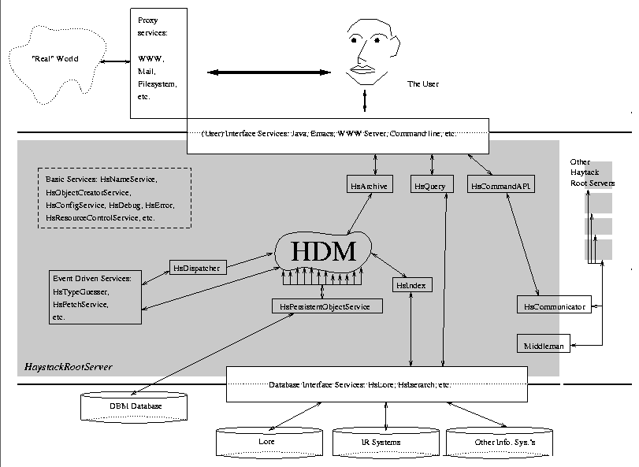

The bulk of functionality within Haystack is implemented by objects in
the Haystack Service Model (HSM). Abstractly, Haystack can be viewed
as standard three-tiered architecture consisting of three different
layers, a user interface layer (the client), a server/service layer,
and a database. Figure  represented the layers (and
components within the layers) graphically.
represented the layers (and
components within the layers) graphically.
This chapter primarily concerns itself with components of the service layer. The Haystack service layer consists of a number of services and the Haystack Data Model (HDM) objects running within one HaystackRootServer.

Figure: Abstract inter-service communication model
Figure illustrates some of the relationships between
services in Haystack. As stated previously, services run within the
context of one HaystackRootServer. There are services that
provide interfaces between the user and the indexing and archiving
subsystems. There are services that provide utility functions for
other services. For example, a name service allows for communication
between other services, and a resource control service provides the
mechanism for the locking of arbitrary named resources. There are
services within the HaystackRootServer that ``listen'' for
changes in the HDM. When those changes happen, the services are
notified and they act upon the data.